Начало
В. Гущина
САН-ДИЕГО 1974 ГОД
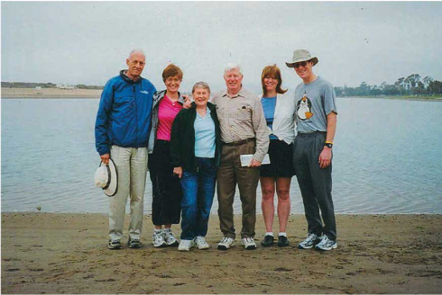
Основоположники триатлона в США (слева направо): создатели Ironman Джон и Джуди Коллинз, организаторы первого триатлона в Сан-Диего Бетти и Джек Джонстон, Кристин
и Майкл Коллинз — на месте исторического старта в 1974-м. Парк Мишен бей, 2015 год.
Фото из архива семьи Коллинз
и Майкл Коллинз — на месте исторического старта в 1974-м. Парк Мишен бей, 2015 год.
Фото из архива семьи Коллинз
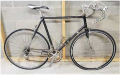
Велосипед первого «Железного человека», Гордона Халлера, на котором он участвовал в Ironman в 1979 году. Фото из архива Г. Халлера
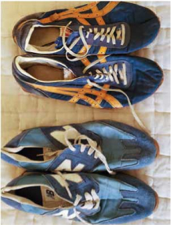
Кроссовки Гордона Халлера, первого «Железного человека», в которых он победил в 1978 году: вверху для велоэтапа, внизу для бегового. Фото из архива Г. Халлера
Отправной точкой в истории триатлона считается 25 сентября 1974 года, когда американцы Джек Джонстон и Дон Шанахан при поддержке бегового клуба Сан-Диего устроили соревнования из трех составляющих: бега на 10 км, велогонки на 8 км и плавания на 500 м.
А началось всё с того, что 35-летний учитель математики Джек Джонстон, дабы вернуть себе хорошую форму, как и миллионы американцев, увлекся бегом трусцой. За плечами у него уже было плавание в колледже и школе. Поэтому в 1973 году он решил тряхнуть стариной и испытать себя в биатлоне под названием «День рождения Дэйва Пейна». Там нужно было не только бежать чуть больше 7 км, но и плыть 300 м.
Джонстону затея настолько понравилась, что уже на следующий год он улучшил результат и вошел в первую десятку этих стартов из более чем ста участников.
Ему хотелось, чтобы таких гонок было больше, но Джек считал, что плыть в них нужно дольше. Таким образом, он задумал свою версию биатлона, к которой хотел еще добавить часть бегового этапа босиком по траве или песку.
С этим проектом Джек Джонстон пришел в беговой клуб Сан-Диего и попросил внести его соревнования в календарь. Руководитель клуба вспомнил, что с идеей каких-то безумных гонок носился также юрист Дон Шанахан, и предложил им объединить усилия, чтобы в расписании не было слишком много странных соревнований. Шанахан, как выяснилось, хотел добавить в мультигонки велоэтап.
Свободных окон в выходные не оказалось. Старты были назначены на среду в 17.45. Вступительный взнос — один доллар. В объявлении участников просили захватить с собой собственные велосипеды. Чем обернется их затея для истории спорта, Джон- стон, конечно, не подозревал, но вспоминал потом интересный момент. Когда он заказал изготовление наград, то через какое-то время ему перезвонил гравировщик. Он был в полной растерян- ности и просил уточнить, как пишется слово «триатлон», потому что ни в одном словаре его не нашел.
А началось всё с того, что 35-летний учитель математики Джек Джонстон, дабы вернуть себе хорошую форму, как и миллионы американцев, увлекся бегом трусцой. За плечами у него уже было плавание в колледже и школе. Поэтому в 1973 году он решил тряхнуть стариной и испытать себя в биатлоне под названием «День рождения Дэйва Пейна». Там нужно было не только бежать чуть больше 7 км, но и плыть 300 м.
Джонстону затея настолько понравилась, что уже на следующий год он улучшил результат и вошел в первую десятку этих стартов из более чем ста участников.
Ему хотелось, чтобы таких гонок было больше, но Джек считал, что плыть в них нужно дольше. Таким образом, он задумал свою версию биатлона, к которой хотел еще добавить часть бегового этапа босиком по траве или песку.
С этим проектом Джек Джонстон пришел в беговой клуб Сан-Диего и попросил внести его соревнования в календарь. Руководитель клуба вспомнил, что с идеей каких-то безумных гонок носился также юрист Дон Шанахан, и предложил им объединить усилия, чтобы в расписании не было слишком много странных соревнований. Шанахан, как выяснилось, хотел добавить в мультигонки велоэтап.
Свободных окон в выходные не оказалось. Старты были назначены на среду в 17.45. Вступительный взнос — один доллар. В объявлении участников просили захватить с собой собственные велосипеды. Чем обернется их затея для истории спорта, Джон- стон, конечно, не подозревал, но вспоминал потом интересный момент. Когда он заказал изготовление наград, то через какое-то время ему перезвонил гравировщик. Он был в полной растерян- ности и просил уточнить, как пишется слово «триатлон», потому что ни в одном словаре его не нашел.
Я не был в восторге от этого предложения,
потому что никогда не ездил на велосипеде. У меня
даже не было его. «Но какого черта? — подумал я. —
Давай сделаем это». Мы решили назвать
мероприятие триатлоном Mission Bay.
потому что никогда не ездил на велосипеде. У меня
даже не было его. «Но какого черта? — подумал я. —
Давай сделаем это». Мы решили назвать
мероприятие триатлоном Mission Bay.
Организаторы, конечно, просили друзей помочь с привлечением участников, но встаки удивились, когда на старты всего за две недели до участия в новом спортивном мероприятии заявилось сразу 47 человек, по словам самого Джека Джон- стона, «явно не лишенных духа авантюризма, чтобы выйти из дома после тяжелого рабочего дня».
Схема отличалась от современного триатлона. Сначала нужно было пробежать круг (4,8 км), затем дважды объехать вокруг острова Фиеста на велосипеде (8 км), затем доплыть до мате- рика, дальше пробежать босиком по траве и песку (4,8 км) и снова проплыть по заливу до острова (в общей сложности 460 м). При этом, чтобы финишировать, нужно было подняться по крутой грунтовой насыпи.
У многих не было гоночных велосипедов, вместо них — прогулочные круизеры. В своей массе участники были бегунами и плавали неважно. В качестве спасателей Джек Джонстон попросил выступить своего 13-летнего сына-сёрфингиста и двух его друзей. Дело нашлось и для жены Джонстона, Бетти. Она возглавила команду, которая собирала обувь спортсменов после первого заплыва в мешки для мусора и доставляла их к месту финиша, а также регистрировала результаты участников.
Дон Шанахан не смог соревноваться из-за травмы. Джонстону пришлось бежать за двоих: «Когда я слез с велосипеда, мне показалось, что мои ноги не принадлежат мне. Я издал стон от боли и помню, как кто-то крикнул мне: “Ну, это была твоя идея!” Заняв шестое место, я начал помогать Дону с финишем. Разумеется, уже после наступления темноты, когда последние из первых триатлетов пробились через залив к финишу». Важный нюанс, который упустили тогда организаторы: финиш пришелся на темное время суток. Но быстро осознав свой прокол, последний короткий этап плавания подсве- тили фарами, подогнав несколько машин.
Победителем того первого триатлона стал 43-летний Билл Филлипс, профессор физиологии из Университета Сан-Диего. Позже в интервью, вспоминая свои ощущения, он сказал, что словно становился сильнее по мере того, как гонка продолжалась.
Для Филлипса участие представляло и научный интерес: «У нас был грант Национального института здоровья на из- учение физических упражнений и основных биомаркеров, таких как частота сердечных сокращений и артериальное давление. Мы обнаружили, что даже упражнения на выносливость низкого уровня приносят пользу сердечно-сосудистой системе». Участие Билла Филлипса и профессиональные наблюдения его и коллег оказались бесценны для дальнейшего развития триатлона, по мнению знаменитого триатлета и историка спорта Скотта Тинли. Он писал: «Устоявшийся миф о ранних триатлетах, как о напористых, но при этом дьявольски беспечных пляжных бездельниках, достаточно точен. Но что было упущено, так это достижения горстки “лабораторных крыс” из Университета Сан-Диего, которые были очень умными и очень быстрыми: доктора Билла Филлипса, Тони Сусека, Мака Ларсена, Денни Селдера, Тома Маккензи, Джина Николса... Как будто случайные работы в науке о мультиспорте, где под лабораторными халатами носились спидометры и беговые шорты Фрэнка Шортера».
Тинли неспроста упоминает имя Фрэнка Шортера. Именно после его победы в марафоне на Олимпийских играх в Мюнхене в 1972 году Америку охватил бум бега трусцой, из кото- рого в итоге и вырос триатлон в Сан-Диего...
В списках участников той самой первой гонки можно обнаружить имена супругов Джона и Джуди Коллинз, которые впоследствии выведут триатлон на следующий этап его развития.
Схема отличалась от современного триатлона. Сначала нужно было пробежать круг (4,8 км), затем дважды объехать вокруг острова Фиеста на велосипеде (8 км), затем доплыть до мате- рика, дальше пробежать босиком по траве и песку (4,8 км) и снова проплыть по заливу до острова (в общей сложности 460 м). При этом, чтобы финишировать, нужно было подняться по крутой грунтовой насыпи.
У многих не было гоночных велосипедов, вместо них — прогулочные круизеры. В своей массе участники были бегунами и плавали неважно. В качестве спасателей Джек Джонстон попросил выступить своего 13-летнего сына-сёрфингиста и двух его друзей. Дело нашлось и для жены Джонстона, Бетти. Она возглавила команду, которая собирала обувь спортсменов после первого заплыва в мешки для мусора и доставляла их к месту финиша, а также регистрировала результаты участников.
Дон Шанахан не смог соревноваться из-за травмы. Джонстону пришлось бежать за двоих: «Когда я слез с велосипеда, мне показалось, что мои ноги не принадлежат мне. Я издал стон от боли и помню, как кто-то крикнул мне: “Ну, это была твоя идея!” Заняв шестое место, я начал помогать Дону с финишем. Разумеется, уже после наступления темноты, когда последние из первых триатлетов пробились через залив к финишу». Важный нюанс, который упустили тогда организаторы: финиш пришелся на темное время суток. Но быстро осознав свой прокол, последний короткий этап плавания подсве- тили фарами, подогнав несколько машин.
Победителем того первого триатлона стал 43-летний Билл Филлипс, профессор физиологии из Университета Сан-Диего. Позже в интервью, вспоминая свои ощущения, он сказал, что словно становился сильнее по мере того, как гонка продолжалась.
Для Филлипса участие представляло и научный интерес: «У нас был грант Национального института здоровья на из- учение физических упражнений и основных биомаркеров, таких как частота сердечных сокращений и артериальное давление. Мы обнаружили, что даже упражнения на выносливость низкого уровня приносят пользу сердечно-сосудистой системе». Участие Билла Филлипса и профессиональные наблюдения его и коллег оказались бесценны для дальнейшего развития триатлона, по мнению знаменитого триатлета и историка спорта Скотта Тинли. Он писал: «Устоявшийся миф о ранних триатлетах, как о напористых, но при этом дьявольски беспечных пляжных бездельниках, достаточно точен. Но что было упущено, так это достижения горстки “лабораторных крыс” из Университета Сан-Диего, которые были очень умными и очень быстрыми: доктора Билла Филлипса, Тони Сусека, Мака Ларсена, Денни Селдера, Тома Маккензи, Джина Николса... Как будто случайные работы в науке о мультиспорте, где под лабораторными халатами носились спидометры и беговые шорты Фрэнка Шортера».
Тинли неспроста упоминает имя Фрэнка Шортера. Именно после его победы в марафоне на Олимпийских играх в Мюнхене в 1972 году Америку охватил бум бега трусцой, из кото- рого в итоге и вырос триатлон в Сан-Диего...
В списках участников той самой первой гонки можно обнаружить имена супругов Джона и Джуди Коллинз, которые впоследствии выведут триатлон на следующий этап его развития.
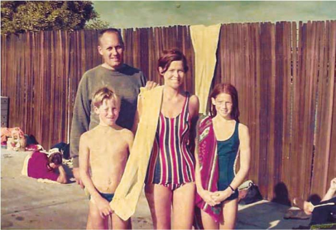
Участники первого триатлона в Сан-Диего Джон и Джуди Коллинз с детьми Майклом и Кристин. Коронадо, 1973 год. Фото из архива семьи Коллинз
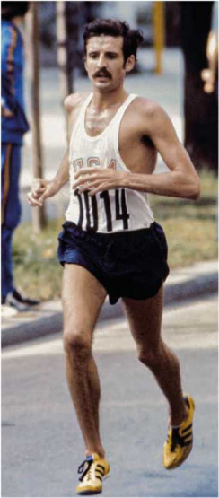
Американский бегун Фрэнк Шортер завоевал золото на марафонской дистанции Олимпийских игр. Мюнхен, 1972 год
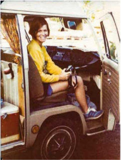
Джуди Коллинз на Оаху. 1977 год. Фото из архива семьи Коллинз
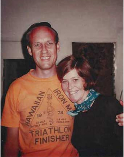
Джон и Джуди Коллинз после Ironman 1978 года. Фото из архива семьи Коллинз
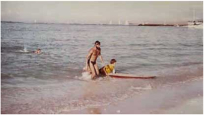
Гордон Халлер выходит из воды после плавательного этапа гонки. Оаху, 1978 год. Фото из архива Г. Халлера
Неважно, насколько ты был хорош,
тебе всё равно приходилось ползти
до финиша.
тебе всё равно приходилось ползти
до финиша.
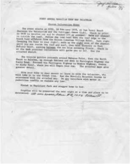
Приглашение на первый Ironman 1978 года с описанием маршрута. Из архива семьи Коллинз
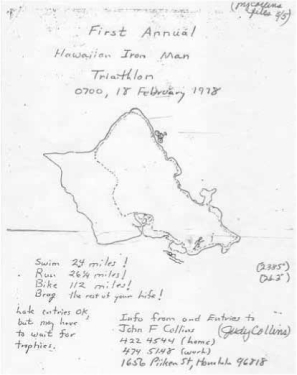
Карта дистанции первого Ironman. 1978 год. Из архива семьи Коллинз
Поучаствовать в гонке их семью пригласила пловчиха Фло Сквайрс. Джуди Коллинз говорит, что именно ей они обязаны знакомству с новым видом спорта, который в корне изменил их жизнь. В том старте Джуди финишировала 30-й, а Джона в протоколах поначалу и вовсе не нашли. Причиной недоразумения оказалась всё та же злополучная темнота, которую не учли организаторы. Джон Коллинз вспоминал потом, что растерялся: фары машин слепили ему в глаза, и он просто не сообразил, кто и как фиксирует финиш. Ради исторической справедливости Джек Джонстон позже внес его в протокол на 35-е место согласно времени, которое запомнил Коллинз.
После того события у Джуди Коллинз и родилась идея провести свой триатлон в Гонолулу, куда перевели по военной службе ее мужа. К февралю 1977 года у нее уже был готов план.
Мероприятие должно было объединить три крупнейших гавайских старта на выносливость: соревнование по плаванию в открытой воде в районе Вайкики (3,86 км), велосипедную гонку вокруг острова Оаху (185,07 км), которая, к слову, проходила в два дня, и марафон в Гонолулу (42,195 км). Джон, в свою очередь, разработал велосипедный маршрут. Он рассчитал, что если урезать часть дистанции и организовать езду против часовой стрелки вокруг острова, то велогонка может стартовать сразу же после плавания в Вайкики и финишировать в парке, где находится традиционный старт гонолулского марафона.
Наконец в ноябре на ежегодном банкете местного плавательного клуба «Вайкики» супруги Коллинз публично объявили о предстоящем соревновании на острове Оаху, где располо- жена главная тихоокеанская база США Пёрл-Харбор.
«Мы разработали гонку для обычных людей, таких как мы, — говорит Джон Коллинз. — Мы хотели, чтобы любители спорта всегда могли соревноваться, не думая о коммерческой составляющей».
После того события у Джуди Коллинз и родилась идея провести свой триатлон в Гонолулу, куда перевели по военной службе ее мужа. К февралю 1977 года у нее уже был готов план.
Мероприятие должно было объединить три крупнейших гавайских старта на выносливость: соревнование по плаванию в открытой воде в районе Вайкики (3,86 км), велосипедную гонку вокруг острова Оаху (185,07 км), которая, к слову, проходила в два дня, и марафон в Гонолулу (42,195 км). Джон, в свою очередь, разработал велосипедный маршрут. Он рассчитал, что если урезать часть дистанции и организовать езду против часовой стрелки вокруг острова, то велогонка может стартовать сразу же после плавания в Вайкики и финишировать в парке, где находится традиционный старт гонолулского марафона.
Наконец в ноябре на ежегодном банкете местного плавательного клуба «Вайкики» супруги Коллинз публично объявили о предстоящем соревновании на острове Оаху, где располо- жена главная тихоокеанская база США Пёрл-Харбор.
«Мы разработали гонку для обычных людей, таких как мы, — говорит Джон Коллинз. — Мы хотели, чтобы любители спорта всегда могли соревноваться, не думая о коммерческой составляющей».
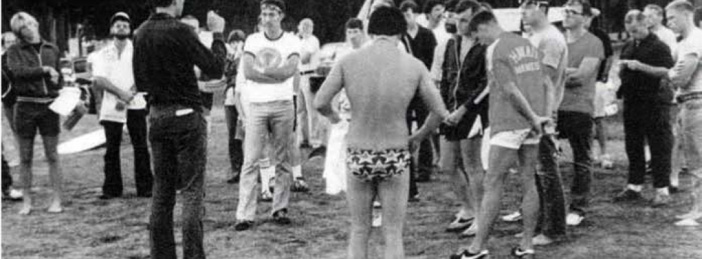
Джон Коллинз напутствует участников первой гонки Ironman. Оаху, 1978 год. Фото из архива
семьи Коллинз
семьи Коллинз
ГАВАЙИ, ОAХУ 1978 ГОД
Старт, назначенный на 18 февраля 1978 года, Джон и Джуди Коллинз впоследствии назовут «Железный человек».
«Джон знал одного бегуна на верфи, который имел очень устойчивый темп бега вне зависимости от расстояния, — рассказывает Джуди Коллинз. — Он мог бежать бесконечно долго и получил прозвище “Железный человек”. В тот вечер, когда мы пришли к этой идее, Джон сказал мне: “Кто бы ни финишировал первым, мы назовем его железным человеком”. Но сначала рабочее название было «Триатлон вокруг острова», а Ironman хотели сделать просто логотипом гонки».
«Безумный» — самое популярное определение в обсуждении первых «железных» соревнований с их фантастическими циф- рами и дистанциями. Большинство, включая самих организато- ров и участников, не было уверено, удастся ли им в принципе добраться до финиша. «Я помню, что после первого Ironman в газете Гонолулу была карикатура, — вспоминает Майкл Коллинз, сын Джона и Джуди, в интервью гавайской ежедневной газете. — На ней был изображен парень, занявший второе место, на больничной койке с трофеем. Подпись гласила: “Я только второй. Победитель умер”».
Итак, первый Ironman был совершенно не похож на то, как выглядят соревнования сейчас: тысячи участников, толпы ликующих зрителей и волонтеров. Тогда в списке смельчаков, заявленных на старт, оказалось всего 15 человек. Именно им предстояло сказать новое слово в представлении о выносли- вости человека. Вступительный взнос — пять долларов, пунктов помощи не было, и в целом мало кто обращал внимание на спортсменов, бегающих по Гонолулу и всему острову.
Гонка началась около 7.30 утра, а первый из участников финишировал после 19.00. Победителем стал 27-летний Гордон Халлер, который на тот момент подрабатывал по ночам таксистом в Гонолулу, чтобы всё свободное время тренироваться. Физик по образованию, а по жизни настоящий фанат спорта, во время службы в ВМФ в должности офицера связи он успешно выступал в военно-спортивном пятиборье. И кстати, Халлер оказался единственным участником, прошедшим когда-то ту самую двухдневную велогонку, которую, чуть сократив, превратили в велоэтап Ironman.
Первый в истории «Железный человек» до сих пор с улыбкой вспоминает один момент перед стартом. Халлер договорился, что на воде с доской и веслом его будет страховать 11-лет- ний сын хозяев, у которых он снимал жилье на Оаху. «Мы посмотрели на океан, и я сказал: “Ты думаешь, ты сможешь это сделать?” Тогда он повернулся ко мне и сказал: “Ты думаешь, что ты сможешь?” Эту часть я хорошо помню. И он, и я».
«Джон знал одного бегуна на верфи, который имел очень устойчивый темп бега вне зависимости от расстояния, — рассказывает Джуди Коллинз. — Он мог бежать бесконечно долго и получил прозвище “Железный человек”. В тот вечер, когда мы пришли к этой идее, Джон сказал мне: “Кто бы ни финишировал первым, мы назовем его железным человеком”. Но сначала рабочее название было «Триатлон вокруг острова», а Ironman хотели сделать просто логотипом гонки».
«Безумный» — самое популярное определение в обсуждении первых «железных» соревнований с их фантастическими циф- рами и дистанциями. Большинство, включая самих организато- ров и участников, не было уверено, удастся ли им в принципе добраться до финиша. «Я помню, что после первого Ironman в газете Гонолулу была карикатура, — вспоминает Майкл Коллинз, сын Джона и Джуди, в интервью гавайской ежедневной газете. — На ней был изображен парень, занявший второе место, на больничной койке с трофеем. Подпись гласила: “Я только второй. Победитель умер”».
Итак, первый Ironman был совершенно не похож на то, как выглядят соревнования сейчас: тысячи участников, толпы ликующих зрителей и волонтеров. Тогда в списке смельчаков, заявленных на старт, оказалось всего 15 человек. Именно им предстояло сказать новое слово в представлении о выносли- вости человека. Вступительный взнос — пять долларов, пунктов помощи не было, и в целом мало кто обращал внимание на спортсменов, бегающих по Гонолулу и всему острову.
Гонка началась около 7.30 утра, а первый из участников финишировал после 19.00. Победителем стал 27-летний Гордон Халлер, который на тот момент подрабатывал по ночам таксистом в Гонолулу, чтобы всё свободное время тренироваться. Физик по образованию, а по жизни настоящий фанат спорта, во время службы в ВМФ в должности офицера связи он успешно выступал в военно-спортивном пятиборье. И кстати, Халлер оказался единственным участником, прошедшим когда-то ту самую двухдневную велогонку, которую, чуть сократив, превратили в велоэтап Ironman.
Первый в истории «Железный человек» до сих пор с улыбкой вспоминает один момент перед стартом. Халлер договорился, что на воде с доской и веслом его будет страховать 11-лет- ний сын хозяев, у которых он снимал жилье на Оаху. «Мы посмотрели на океан, и я сказал: “Ты думаешь, ты сможешь это сделать?” Тогда он повернулся ко мне и сказал: “Ты думаешь, что ты сможешь?” Эту часть я хорошо помню. И он, и я».
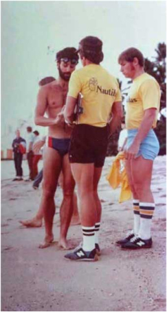
Гордон Халлер с командой поддержки от клуба Nautilus. Оаху, 1978 год. Фото из архива Г. Халлера
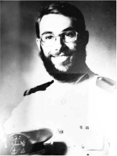
Гордон Халлер в начале службы в ВМФ. 1972 год. Фото из архива Г. Халлера
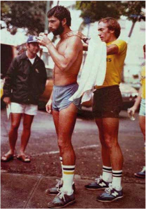
Между этапами гонки. Оаху, 1978 год. Фото из архива Г. Халлера
Ironman на острове Оаху в феврале 1978 года
стал первым триатлоном, который начался
именно с заплыва.
стал первым триатлоном, который начался
именно с заплыва.
Если бы водный этап поставили в конце, то плыть 4 км в открытом океане пришлось бы после 10–12
часов тяжелой физической нагрузки. То есть заплыв поставили вперед из соображений безопасности.
Таким порядок прове- дения соревнований остается и по сей день.
часов тяжелой физической нагрузки. То есть заплыв поставили вперед из соображений безопасности.
Таким порядок прове- дения соревнований остается и по сей день.
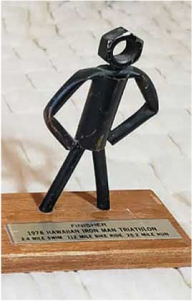
Все финишёры получили в награду железных человечков, изготовленных собственноручно Джоном Коллинзом. На фото трофей Гордона Халлера.
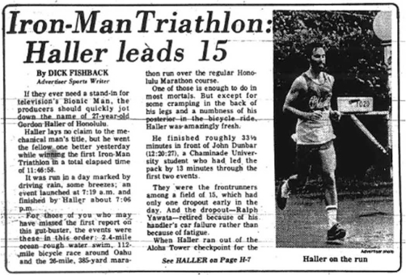
Заметка о гонках в газете Honolulu Advertiser. 1978 год
И если сейчас триатлеты считают каждую секунду в транзитной зоне, чтобы прыгнуть на велосипед как можно быстрее, то тогда Гордон Халлер в переходах между видами успел принять душ и даже дать небольшое интервью с одновременным массажем плеч.
Сейчас Гордон Халлер, программист-аналитик на пенсии, полностью ушел в тренерскую работу. И, конечно, сам не раз проходил «железную» дистанцию уже с пышными финишами, под прицелом телекамер, с подбадривающим голосом диктора и поддержкой зрителей, а тогда он просто тихонько бежал один сквозь тьму к огням: «Я добрался туда, пересек финишную черту, а там человека три. И один парень спросил: “Ты участву- ешь в гонке?” Я ответил: “Ага”, а он тогда сказал: “Что ж, ты это сделал”. Вот и всё». Халлер завершил свою гонку со временем 11 ч. 46 мин. 58 сек., более чем на полчаса опередив бывшего «морского котика» Джона Данбара, который пришел вторым. Из пятнадцати человек до финиша тогда добрались двенадцать. Каждый был награжден памятной футболкой и трофеем ручной работы — железным человечком.
«Трофей был изготовлен из медной трубы, спаянной со стальной гайкой. Мы установили дома сборочную линию, и наша дочь помогала мне, — рассказывает Джон Коллинз. — Правда, полу- чилось не очень хорошо: некоторые головы отвалились за эти годы, в том числе и у той фигурки, которую мы показывали по телевидению. У нас не было отдельного приза за первое или второе место, они были одинаковыми для всех. Кстати, после того как мы посчитали все расходы, оказалось, что мы еще и потеряли 25 долларов на этом мероприятии».
Спортивный обозреватель одной из местных газет Дик Фишбэк в своей заметке о первом Ironman назвал триатлон «разрушителем кишок» и тем, что выходит далеко за рамки возможного для «большинства смертных». При этом Фишбек сравнил Халлера с бионическим человеком, героем популярного тогда телесериала.
Сейчас Гордон Халлер, программист-аналитик на пенсии, полностью ушел в тренерскую работу. И, конечно, сам не раз проходил «железную» дистанцию уже с пышными финишами, под прицелом телекамер, с подбадривающим голосом диктора и поддержкой зрителей, а тогда он просто тихонько бежал один сквозь тьму к огням: «Я добрался туда, пересек финишную черту, а там человека три. И один парень спросил: “Ты участву- ешь в гонке?” Я ответил: “Ага”, а он тогда сказал: “Что ж, ты это сделал”. Вот и всё». Халлер завершил свою гонку со временем 11 ч. 46 мин. 58 сек., более чем на полчаса опередив бывшего «морского котика» Джона Данбара, который пришел вторым. Из пятнадцати человек до финиша тогда добрались двенадцать. Каждый был награжден памятной футболкой и трофеем ручной работы — железным человечком.
«Трофей был изготовлен из медной трубы, спаянной со стальной гайкой. Мы установили дома сборочную линию, и наша дочь помогала мне, — рассказывает Джон Коллинз. — Правда, полу- чилось не очень хорошо: некоторые головы отвалились за эти годы, в том числе и у той фигурки, которую мы показывали по телевидению. У нас не было отдельного приза за первое или второе место, они были одинаковыми для всех. Кстати, после того как мы посчитали все расходы, оказалось, что мы еще и потеряли 25 долларов на этом мероприятии».
Спортивный обозреватель одной из местных газет Дик Фишбэк в своей заметке о первом Ironman назвал триатлон «разрушителем кишок» и тем, что выходит далеко за рамки возможного для «большинства смертных». При этом Фишбек сравнил Халлера с бионическим человеком, героем популярного тогда телесериала.
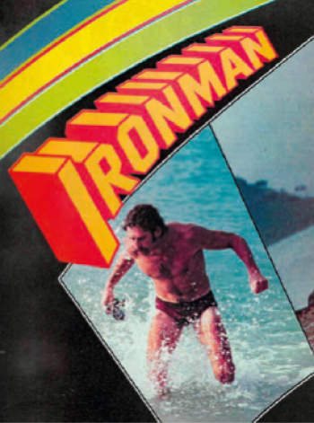
Журнал Sport Illustrated со статьей Барри Макдермотта, ставшей культовой. На фото Том Уоррен, победитель гонки. 1979 год
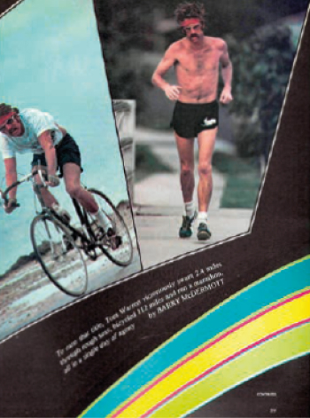
ГАВАЙИ, ОAХУ 1979 ГОД
Не скупился на яркие эпитеты и журналист Барри Макдермотт из Sports Illustraited. Он был так заворожён новыми соревнованиями, что его репортаж под заголовком
Ironman растянулся на одиннадцать страниц. Он стал свидетелем второй по счету гонки на выносливость. Статья вышла в номере за 14 мая 1979 года и мгновенно стала культовой в США и далеко за океаном. Барри Макдермотт очень живо и с доброй иронией рассказал о безумцах, которые, несмотря на шторм, нырнули в бурлящий океан, чтобы бросить вызов собственным возможностям.
Изначально на старт было заявлено около 50 человек, но из-за погоды гонку дважды переносили. В итоге осталось всего 15 самых отчаянных участников, среди которых 16-летний сын Джона и Джуди Коллинз, Майкл, был самым младшим.
Триатлон 1979 года все-таки состоялся, когда Джуди удалось получить помощь от местного клуба каноэ с аутригером. Они предоставили лодку для этапа в Вайкики. Капитан клуба управлял катером, а Джуди тогда была одним из спасателей.
«Это было воскресенье. Январь — сезон штормов в Гоно- лулу и середина одного из самых худших погодных периодов за последние время. Небо было черным, и ветер гнул пальмы. Голосование прошло в пользу гонки: 13 за, 3 против. Встревоженная женщина-участница, которая сама отказалась, недоумевала. “Каждый должен принимать собственное реше- ние”, — кричал мужчина в дождевике, одной рукой придерживая шляпу на голове. “Да, это жизнь”, — сказала женщина и ушла. А ведь она бросила школу и год тренировалась, чтобы участвовать в соревнованиях. Тем не менее она решила, что ее жизнь стоит большего».
«Да кому такое вообще под силу?» — задавались вопросом читатели. И Макдермотт из забавных, казалось бы, деталей талантливо рисовал портреты этих героев, в которых каждый мог узнать себя, приятеля или соседа. В заявках на участие в первом Ironman можно было встретить людей самых разных профессий: юриста, бухгалтера, анестезиолога, казначея.
Ironman растянулся на одиннадцать страниц. Он стал свидетелем второй по счету гонки на выносливость. Статья вышла в номере за 14 мая 1979 года и мгновенно стала культовой в США и далеко за океаном. Барри Макдермотт очень живо и с доброй иронией рассказал о безумцах, которые, несмотря на шторм, нырнули в бурлящий океан, чтобы бросить вызов собственным возможностям.
Изначально на старт было заявлено около 50 человек, но из-за погоды гонку дважды переносили. В итоге осталось всего 15 самых отчаянных участников, среди которых 16-летний сын Джона и Джуди Коллинз, Майкл, был самым младшим.
Триатлон 1979 года все-таки состоялся, когда Джуди удалось получить помощь от местного клуба каноэ с аутригером. Они предоставили лодку для этапа в Вайкики. Капитан клуба управлял катером, а Джуди тогда была одним из спасателей.
«Это было воскресенье. Январь — сезон штормов в Гоно- лулу и середина одного из самых худших погодных периодов за последние время. Небо было черным, и ветер гнул пальмы. Голосование прошло в пользу гонки: 13 за, 3 против. Встревоженная женщина-участница, которая сама отказалась, недоумевала. “Каждый должен принимать собственное реше- ние”, — кричал мужчина в дождевике, одной рукой придерживая шляпу на голове. “Да, это жизнь”, — сказала женщина и ушла. А ведь она бросила школу и год тренировалась, чтобы участвовать в соревнованиях. Тем не менее она решила, что ее жизнь стоит большего».
«Да кому такое вообще под силу?» — задавались вопросом читатели. И Макдермотт из забавных, казалось бы, деталей талантливо рисовал портреты этих героев, в которых каждый мог узнать себя, приятеля или соседа. В заявках на участие в первом Ironman можно было встретить людей самых разных профессий: юриста, бухгалтера, анестезиолога, казначея.
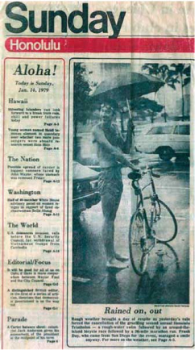
Газета Sunday Honolulu. 1979 год.
Дождь льет и льет
Суровая погода принесла передышку, поскольку вчерашний дождь вынудил отменить изнурительный второй ежегодный триатлон в Гонолулу: заплыв в бурной воде, за которым следует велогонка вокруг острова и марафон на 42 километра. Фрэнк Дэй, приехавший на мероприятие из Сан-Диего, все равно сумел улыбнуться.
Дождь льет и льет
Суровая погода принесла передышку, поскольку вчерашний дождь вынудил отменить изнурительный второй ежегодный триатлон в Гонолулу: заплыв в бурной воде, за которым следует велогонка вокруг острова и марафон на 42 километра. Фрэнк Дэй, приехавший на мероприятие из Сан-Диего, все равно сумел улыбнуться.
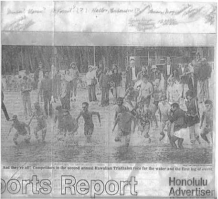
Газета Honolulu Advertiser. Фото из архива семьи Коллинз
Здесь нет
призовых денег
и мало славы
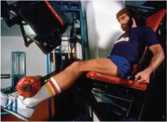
Гордон Халлер. Из журнала Sport Illustrated от 14 мая 1979 года
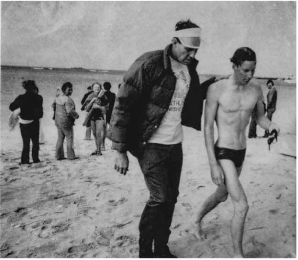
Джон Коллинз встречает сына Майкла после заплыва. Оаху, 1979 год. Фото из архива семьи Коллинз
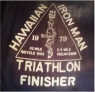
Футболка участника Ironman в 1979 году
«Здесь нет призовых денег, и мало славы. Прошлогодний победитель бородатый Гордон Халлер, 28-летний бывший таксист, был рад прочитать коротенькую заметку о гонке в газете Гонолулу. Еще лучше тот факт, что друзья стали присылать ему письма, адресованные “Железному человеку”. Мероприятие 1978 года было своего рода экспериментом и, как любой эксперимент, привлекло смешанную группу случайных участников. Один парень едва держался на воде, другой купил велосипед и научился на нем ездить за день до гонки».
Гордон Халлер и его прошлогодний соперник из «морских котиков» Джон Данбар участвовали и сейчас. Они тренирова- лись весь год и вели дневники с детальным описанием упражнений и питания. И конечно, всё внимание было сосредоточено на их соперничестве. Между тем победителем второго Ironman и главным героем репортажа стал Том Уоррен, владелец бара из Сан-Диего. На свою поездку ради триатлона в Гонолулу он потратил целую тысячу долларов, но этот факт не заставил тогда смотреть на участника всерьез.
И даже когда Уоррен лидировал, наблюдатели сомневались и откровенно сочувствовали Тому, видя его необычную манеру бега: из-за перелома у него когда-то неправильно срослась нога. «Джонни Фаербер, местный марафонец, бросился бежать с Уорреном, давая по дороге советы тоном человека, который утешает больное животное. Оставалось около 16 километров, и Фаербер прошеп- тал зрителям: “Я не думаю, что у него получится сделать это”».
Но у Тома Уоррена не просто получилось, он победил со временем 11 ч. 15 мин. 56 сек., улучшив прошлогодний рекорд Халлера почти на полчаса! А Джон Данбар снова пришел вторым: «Уставший взгляд Данбара резко изменился, а его глаза расширились от удивления, когда он увидел победителя, который уже успел прийти в себя за 48 минут, разделявшие их финиши. Колени юноши подогнулись, и его тело начало покачиваться в танце. Он хрипло бормотал, поздравляя победителя. Уоррен пошутил: «Готов пройтись по барам?» Но ошеломленного Данбара бросились заворачивать в одеяла. На какой-то момент его ноги парализовало. Пока помощники Данбара осторожно обливали его теплой водой, Халлер, свергнутый чемпион, и Уоррен, новый, ушли вместе, чтобы до полуночи в джакузи обмениваться историями о тренировках. Они пришли к выводу, что это определенно образ жизни».
Гордон Халлер и его прошлогодний соперник из «морских котиков» Джон Данбар участвовали и сейчас. Они тренирова- лись весь год и вели дневники с детальным описанием упражнений и питания. И конечно, всё внимание было сосредоточено на их соперничестве. Между тем победителем второго Ironman и главным героем репортажа стал Том Уоррен, владелец бара из Сан-Диего. На свою поездку ради триатлона в Гонолулу он потратил целую тысячу долларов, но этот факт не заставил тогда смотреть на участника всерьез.
И даже когда Уоррен лидировал, наблюдатели сомневались и откровенно сочувствовали Тому, видя его необычную манеру бега: из-за перелома у него когда-то неправильно срослась нога. «Джонни Фаербер, местный марафонец, бросился бежать с Уорреном, давая по дороге советы тоном человека, который утешает больное животное. Оставалось около 16 километров, и Фаербер прошеп- тал зрителям: “Я не думаю, что у него получится сделать это”».
Но у Тома Уоррена не просто получилось, он победил со временем 11 ч. 15 мин. 56 сек., улучшив прошлогодний рекорд Халлера почти на полчаса! А Джон Данбар снова пришел вторым: «Уставший взгляд Данбара резко изменился, а его глаза расширились от удивления, когда он увидел победителя, который уже успел прийти в себя за 48 минут, разделявшие их финиши. Колени юноши подогнулись, и его тело начало покачиваться в танце. Он хрипло бормотал, поздравляя победителя. Уоррен пошутил: «Готов пройтись по барам?» Но ошеломленного Данбара бросились заворачивать в одеяла. На какой-то момент его ноги парализовало. Пока помощники Данбара осторожно обливали его теплой водой, Халлер, свергнутый чемпион, и Уоррен, новый, ушли вместе, чтобы до полуночи в джакузи обмениваться историями о тренировках. Они пришли к выводу, что это определенно образ жизни».
Лин Лемэр вошла
в историю триатлона
как первая женщина –
победитель Ironman.
Еще одной сенсацией второго Ironman стало участие в соревнованиях единственной женщины — Лин Лемэр. Она же вошла в историю триатлона как первая женщина — победитель Ironman. За два года до этого Лемэр выиграла нацио- нальный чемпионат США в 40-километровой велогонке. Тогда это казалось невероятным, но факт: на «железной» дистанции она соперничала на равных с мужчинами. В какой-то момент в велопробеге она была на втором месте, всего на десять минут отставая от лидера гонки Тома Уоррена. В итоге она заняла пятое место в общем зачете с результатом 12 ч. 55 мин. 38 сек.
И пока победители праздновали кто как мог, организатор гонок Джон Коллинз всё еще ждал своего сына Майка. Юноша, который два с половиной часа потерял в гонке из-за проколотого колеса, закончил свой марафон только в понедельник в 8.30 утра.
«Мы знали многих людей, которые говорили нам, что у нас не получится осуществить что-то подобное, но это был успех, — вспоминает Джон Коллинз. — Ironman всегда был про то, чтобы завершать начатое, о возможности сделать то, что вы всегда хотели, но никогда не решались. Может, не так быстро, как человек, бегущий перед вами, но определенно быстрее человека, который так ничего и не начинал».
Но старты следующего года оказались под угрозой срыва. Супруги Коллинз, узнав, что вынуждены снова переезжать из-за службы Джона, отчаянно искали того, кто все-таки про- ведет старт. На тот момент телекомпания «Эй-би-си» уже договорилась с ними о съемках Ironman 1980 года, а поучаствовать теперь хотели не только местные пловцы, но и спортсмены с материка. Наконец им удалось уговорить взять организацию на себя владельца фитнес-клуба «Наутилус» Хэнка Грундмана (его центр спонсировал Гордона Халлера и пожертвовал футболки в 1979 году). Помочь пообещали и волонтеры из плава- тельного клуба Вайкики. Таким образом, морской офицер Джон Коллинз отдал коробку со всеми инструкциями по гонке.
Впоследствии жена Хэнка, Валери Силк, соединит два слова (iron и man) в одно и превратит культовую гонку Ironman в один из известнейших спортивных брендов. Через сорок лет содержимое той самой коробки на торгах оценят в миллиард долларов.
«Если бы мы остались на Гавайях, то, скорее всего, гонка так и была бы просто местным мероприятием, — говорит Джуди Коллинз. — Слава богу, что Хэнк из «Наутилуса» согласился стать директором соревнований. Это произошло буквально за ночь до ее отмены. Мы так радовались, что гонка состоится еще один раз! А потом уже мы понятия не имели, кто здесь главный, просто слышали новости и были счастливы знать, что мероприятие, которое мы когда-то начали, до сих пор живет».
И пока победители праздновали кто как мог, организатор гонок Джон Коллинз всё еще ждал своего сына Майка. Юноша, который два с половиной часа потерял в гонке из-за проколотого колеса, закончил свой марафон только в понедельник в 8.30 утра.
«Мы знали многих людей, которые говорили нам, что у нас не получится осуществить что-то подобное, но это был успех, — вспоминает Джон Коллинз. — Ironman всегда был про то, чтобы завершать начатое, о возможности сделать то, что вы всегда хотели, но никогда не решались. Может, не так быстро, как человек, бегущий перед вами, но определенно быстрее человека, который так ничего и не начинал».
Но старты следующего года оказались под угрозой срыва. Супруги Коллинз, узнав, что вынуждены снова переезжать из-за службы Джона, отчаянно искали того, кто все-таки про- ведет старт. На тот момент телекомпания «Эй-би-си» уже договорилась с ними о съемках Ironman 1980 года, а поучаствовать теперь хотели не только местные пловцы, но и спортсмены с материка. Наконец им удалось уговорить взять организацию на себя владельца фитнес-клуба «Наутилус» Хэнка Грундмана (его центр спонсировал Гордона Халлера и пожертвовал футболки в 1979 году). Помочь пообещали и волонтеры из плава- тельного клуба Вайкики. Таким образом, морской офицер Джон Коллинз отдал коробку со всеми инструкциями по гонке.
Впоследствии жена Хэнка, Валери Силк, соединит два слова (iron и man) в одно и превратит культовую гонку Ironman в один из известнейших спортивных брендов. Через сорок лет содержимое той самой коробки на торгах оценят в миллиард долларов.
«Если бы мы остались на Гавайях, то, скорее всего, гонка так и была бы просто местным мероприятием, — говорит Джуди Коллинз. — Слава богу, что Хэнк из «Наутилуса» согласился стать директором соревнований. Это произошло буквально за ночь до ее отмены. Мы так радовались, что гонка состоится еще один раз! А потом уже мы понятия не имели, кто здесь главный, просто слышали новости и были счастливы знать, что мероприятие, которое мы когда-то начали, до сих пор живет».
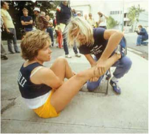
Лин Лемэр, первая женщина — победитель Ironman. Из журнала Sport Illustrated от 14 мая 1979 года

Джуди и Джон Коллинз на ежегодном банкете клуба «Вай- кики» в 1979 году делают объявление о том, что гонку Ironman в 1980 году берет в свои руки Хэнк Грудман. Фото из архива семьи Коллинз
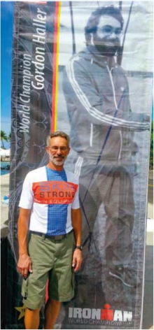
«Я в 63, и я в 29» — так подписал это фото Гор- дон Халлер. Фото из архива Г. Халлера
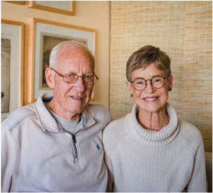
Джон и Джуди Коллинз. 2021 год. Фото сделано внучкой Сири Коллинз специально для этой книги
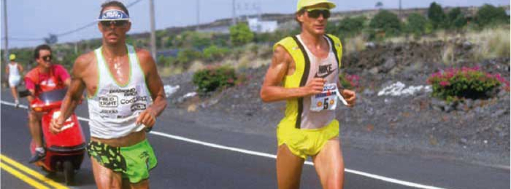
Знаменитая «железная» война Дэйва Скотта и Марка Аллена, 1989 год
ГАВАЙИ
1980–1982 ГОДЫ
1980–1982 ГОДЫ
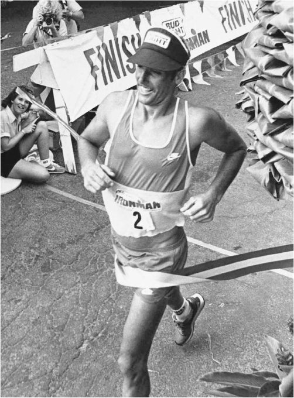
Дэйв Скотт, шестикратный победитель Ironman. На фото финиш 1982 года
Знаменитая статья Барри Макдермотта попа-дает в руки к кому-то из телепрограммы Wide World of Sports. Этот кто-то читает и отправляет записку дальше: «В следующем году приведите чертову команду в этот сумасшедший вид спорта!»
В 1980 году на Оаху приезжает телевидение, и Ironman врывается в гостиные американцев. Побе- дителем соревнования с первой телевизионной трансляцией становится 26-летний выпускник Кали- форнийского университета Дэйв Скотт. Робин Бек — первая среди женщин. Будущая легенда триатлона Дэйв Скотт вспоминал, как впервые увидел листовку от Джона Коллинза с рекламой его гонки и даже посмеялся, увидев цифры дистанции: «Я помню, как думал долгих три дня, но меня это так заинтриго- вало, что я допустил мысль: “Наверное, я мог бы это сделать”. В то время я был немного наивен».
В итоге поучаствовать его заставила всё та же ста- тья в Sports Illustraited: «Я прочитал статью и сказал: “Я должен это сделать”».
Дэйв Скотт поднялся на пьедестал триатлона, снеся отметки предыдущих чемпионов, с результатом почти на два часа быстрее, чем у Тома Уоррена. Его время — 9 ч. 24 мин. 33 сек. В отличие от предше- ственников за его триумфом уже следила вся страна.
Впрочем, одно общее пока оставалось: никаких призовых, только памятная футболка.
В следующем, 1981 году Валери Силк перевезет гонку с Оаху на Большой остров, в район Кона. С тех пор западная сторона острова становится настоящей Меккой для фанатов Ironman.
Градус драматизма в триатлоне серьезно подняла история, которая случилась в 1982 году. Миллио- ны телезрителей наблюдали невероятный финиш 23-летней Джули Мосс. Она участвовала, чтобы собрать данные для своей диссертации по физиоло- гии упражнений. Долгое время Джули была лидером гонки, но в какой-то момент усталость буквально свалила ее с ног. Она падала и снова вставала, а последние метры спортсменка преодолела прак- тически ползком, отказываясь от помощи. И пусть первой в итоге она не стала, но, безусловно, вошла в историю и парадоксальным образом подстегнула и без того растущий интерес к новому виду спорта. За подвигом Мосс, затаив дыхание, наблюдал по телевизору и ее будущий муж Марк Аллен. Кто знает, может, без этого ползания Джули и не было бы никогда «железной» войны двух легенд: Марка Аллена и Дэйва Скотта.
В 1980 году на Оаху приезжает телевидение, и Ironman врывается в гостиные американцев. Побе- дителем соревнования с первой телевизионной трансляцией становится 26-летний выпускник Кали- форнийского университета Дэйв Скотт. Робин Бек — первая среди женщин. Будущая легенда триатлона Дэйв Скотт вспоминал, как впервые увидел листовку от Джона Коллинза с рекламой его гонки и даже посмеялся, увидев цифры дистанции: «Я помню, как думал долгих три дня, но меня это так заинтриго- вало, что я допустил мысль: “Наверное, я мог бы это сделать”. В то время я был немного наивен».
В итоге поучаствовать его заставила всё та же ста- тья в Sports Illustraited: «Я прочитал статью и сказал: “Я должен это сделать”».
Дэйв Скотт поднялся на пьедестал триатлона, снеся отметки предыдущих чемпионов, с результатом почти на два часа быстрее, чем у Тома Уоррена. Его время — 9 ч. 24 мин. 33 сек. В отличие от предше- ственников за его триумфом уже следила вся страна.
Впрочем, одно общее пока оставалось: никаких призовых, только памятная футболка.
В следующем, 1981 году Валери Силк перевезет гонку с Оаху на Большой остров, в район Кона. С тех пор западная сторона острова становится настоящей Меккой для фанатов Ironman.
Градус драматизма в триатлоне серьезно подняла история, которая случилась в 1982 году. Миллио- ны телезрителей наблюдали невероятный финиш 23-летней Джули Мосс. Она участвовала, чтобы собрать данные для своей диссертации по физиоло- гии упражнений. Долгое время Джули была лидером гонки, но в какой-то момент усталость буквально свалила ее с ног. Она падала и снова вставала, а последние метры спортсменка преодолела прак- тически ползком, отказываясь от помощи. И пусть первой в итоге она не стала, но, безусловно, вошла в историю и парадоксальным образом подстегнула и без того растущий интерес к новому виду спорта. За подвигом Мосс, затаив дыхание, наблюдал по телевизору и ее будущий муж Марк Аллен. Кто знает, может, без этого ползания Джули и не было бы никогда «железной» войны двух легенд: Марка Аллена и Дэйва Скотта.
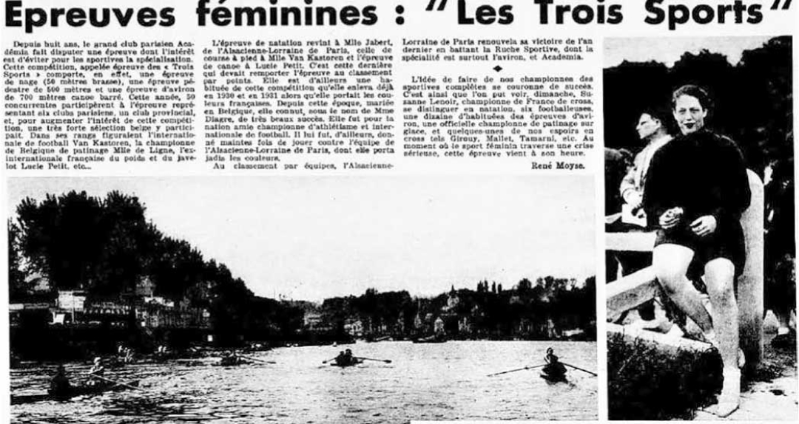
Из французской газеты, 1935 год
ГАВАЙИ
1980–1982 ГОДЫ
1980–1982 ГОДЫ
В августе 1979 года чехословацкая спортивная газета напечатала заметку Зденека Валенты «Агония железных людей». Вирус триатлона подхватила Европа. Уже на следующий год в Чехословакии состоялись целых три подобные гонки: в Пльзене, Праге и Глубоке.
После анонса пражского триатлона в местной прессе в нем приняло участие 108 спортсменов. Дистанция выглядела так: 200 км велогонки, 2 км плавания и 20 км бега. В разных странах появились свои триатлоны со своими самобытными форматами и дистанциями, собирая всё больше и больше участников.
Впрочем, исследователи спорта в Европе уверены, триатлон не чисто американская придумка. Испанцы утверждают, что соревнования, которые можно смело назвать триатлоном проходили в июле 1963 года в кантабрийском городке Кастро-Урдиалес. Нужно было преодолеть 1200 м на велосипеде, 200 м вплавь и 1300 м бегом. Но гораздо раньше подобные мультигонки проходили во Франции. Первые упоминания о соревнованиях Les trois sports, что дословно переводится как «три вида спорта», встречаются еще в конце XIX века. Это был бег на 500 м, велогонка на 10 км, а вместо плавательного этапа — гребля на каноэ на 1200 м.
19 июня 1921 года соревнования La Course des Debrouillards («Гонка находчивых») в Жуанвиль-ле-Пон больше походили на стандартный триатлон, в котором элемент каноэ был заменен заплывом, а газета L’Auto объявила, что гонка состояла из бега (3 км), велогонки (12 км) и пересечения канала Марна вплавь, следующих без перерывов.
В 1920-е годы в разных городах появились и другие соревнования. Кроме того, доподлинно известно об участии в этих соревнованиях женщин. По крайней мере, подобные гонки с их участием точно состоялись в Париже в мае 1930 и 1934 года.
После анонса пражского триатлона в местной прессе в нем приняло участие 108 спортсменов. Дистанция выглядела так: 200 км велогонки, 2 км плавания и 20 км бега. В разных странах появились свои триатлоны со своими самобытными форматами и дистанциями, собирая всё больше и больше участников.
Впрочем, исследователи спорта в Европе уверены, триатлон не чисто американская придумка. Испанцы утверждают, что соревнования, которые можно смело назвать триатлоном проходили в июле 1963 года в кантабрийском городке Кастро-Урдиалес. Нужно было преодолеть 1200 м на велосипеде, 200 м вплавь и 1300 м бегом. Но гораздо раньше подобные мультигонки проходили во Франции. Первые упоминания о соревнованиях Les trois sports, что дословно переводится как «три вида спорта», встречаются еще в конце XIX века. Это был бег на 500 м, велогонка на 10 км, а вместо плавательного этапа — гребля на каноэ на 1200 м.
19 июня 1921 года соревнования La Course des Debrouillards («Гонка находчивых») в Жуанвиль-ле-Пон больше походили на стандартный триатлон, в котором элемент каноэ был заменен заплывом, а газета L’Auto объявила, что гонка состояла из бега (3 км), велогонки (12 км) и пересечения канала Марна вплавь, следующих без перерывов.
В 1920-е годы в разных городах появились и другие соревнования. Кроме того, доподлинно известно об участии в этих соревнованиях женщин. По крайней мере, подобные гонки с их участием точно состоялись в Париже в мае 1930 и 1934 года.
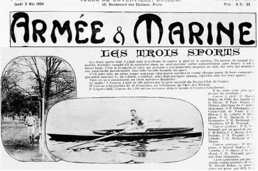
Из французского журнала «Армия и флот», 1904 год
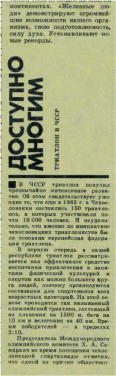 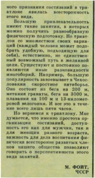
Журнал «Легкая атлетика». 1987 год